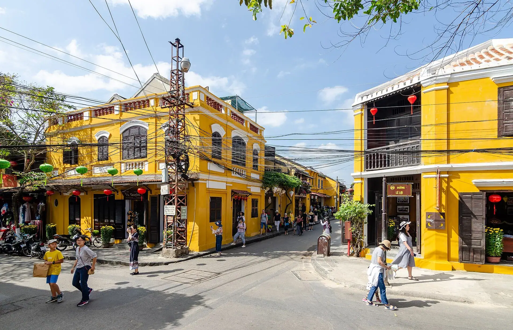

Cao lầu
Sợi mì vàng dai từ nước giếng Bá Lễ, xá xíu, rau Trà Quế.

Từng là thương cảng sầm uất bậc nhất Đông Nam Á thế kỷ XVI–XVII, Hội An ngày nay vẫn giữ nguyên vẹn những dãy nhà tường vàng mái ngói rêu phong. Khi đêm xuống, hàng nghìn chiếc đèn lồng sắc màu thắp sáng phố cổ và dòng sông Hoài.
Đang tải thời tiết...
Bấm vào một tháng để xem có nên đi không
Tối 14 âm lịch hằng tháng: phố cổ tắt đèn điện, chỉ thắp đèn lồng, thả hoa đăng.
Xem lịch âm để đi đúng đêm rằm.
Các đội pháo hoa quốc tế trình diễn trên sông Hàn vào các tối cuối tuần.
Mua vé khán đài hoặc tìm quán ven sông từ sớm; phòng tăng giá mạnh.
Rằm tháng 8 âm lịch: phố Hàng Mã (Hà Nội) và phố cổ Hội An rực rỡ đèn lồng, múa lân.
Buổi tối rất đông – gửi xe xa và đi bộ vào phố.
Mưa lớn, có thể ngập lụt và bão; phố cổ Hội An, Huế có thể ngập.
Theo dõi dự báo, chọn vé/phòng hủy linh hoạt; tàu ra đảo có thể tạm dừng.
Lễ theo âm lịch đổi ngày dương mỗi năm – kiểm tra lịch chính thức trước khi đi.
Sợi mì vàng dai từ nước giếng Bá Lễ, xá xíu, rau Trà Quế.
Ổ bánh mì "ngon nhất thế giới" với pate và nước sốt đặc biệt.
Món mì trứ danh xứ Quảng với nước dùng đậm đà sắc nghệ.
Bánh mì thập cẩm nổi tiếng
2B Phan Châu Trinh, Hội An Cập nhật 09/2026 Báo saiCơm gà xé Hội An
22 Phan Châu Trinh, Hội An Cập nhật 09/2026 Báo saiCao lầu sợi dai, thịt xá xíu
26 Thái Phiên, Hội An Cập nhật 09/2026 Báo saiMón Hội An trong nhà cổ: hoành thánh, bánh xèo
106 Nguyễn Thái Học, Hội An Cập nhật 09/2026 Báo saiBánh xèo, nem lụi cuốn rau
45/51 Trần Hưng Đạo, Hội An Cập nhật 09/2026 Báo saiMì Quảng tôm thịt, ếch
Trần Hưng Đạo, Hội An Cập nhật 09/2026 Báo saiHoành thánh chiên, bánh bao bánh vạc
Nguyễn Thái Học, Hội An Cập nhật 09/2026 Báo saiHải sản nướng ven biển
Biển An Bàng, Hội An Cập nhật 09/2026 Báo saiGiá tham khảo mỗi người. Bấm địa chỉ để mở Google Maps xem giờ mở cửa và đánh giá mới nhất.
Ngồi thuyền thả đèn giữa phố cổ lung linh.
Xoay thúng giữa rừng dừa nước Cẩm Thanh.
Nhận đồ may đo chỉ sau 24 giờ.
Đi chợ và học nấu món Hội An cùng người bản địa.
Tự gợi ý theo điểm đến và tháng đi (chọn ngày khởi hành ở phần Lịch trình để đổi tháng). Đánh dấu để ghi nhớ món đã chuẩn bị.
Thấy giá vé, giờ mở cửa hay quán đã thay đổi? Báo sai
400k–1,2tr / đêm
Đi bộ 5–10 phút vào phố cổ.
1tr–3,5tr / đêm
Kết hợp tắm biển, đạp xe vào phố 15 phút.
300k–800k / đêm
Giữa ruộng rau, rừng dừa – rất yên tĩnh.
Bay/tàu tới Đà Nẵng rồi đi taxi/Grab ~45 phút (30 km, ~300–400k) hoặc xe bus số 1 ra Hội An.
| Từ Hà Nội |
|
|---|---|
| Từ Đà Nẵng |
|
| Từ TP. Hồ Chí Minh |
|
Thời gian ước tính lúc di chuyển, giá một chiều / người mức tiết kiệm – tham khảo. Phương án in đậm là gợi ý.
Giá phòng tham khảo cho 2 người/đêm, cao hơn vào lễ Tết và cuối tuần. Việt Travel không nhận hoa hồng từ các trang đặt chỗ.
Việt Travel · Đà Nẵng (Quảng Nam cũ) · Thời điểm đẹp: Tháng 2 – 5
Mua vé tham quan, đi Chùa Cầu, hội quán Phúc Kiến, nhà cổ Tấn Ký.
Đạp xe ra rừng dừa Bảy Mẫu, ngồi thúng chai.
Thả hoa đăng sông Hoài, ăn cao lầu và dạo chợ đêm.
Dạo phố đêm một chút rồi về nơi ở nghỉ ngơi
Học nấu ăn, làng rau Trà Quế.
Tắm biển An Bàng, may đo áo dài.
Ăn bánh mì Phượng, xem show Ký ức Hội An.
Dạo phố đêm một chút rồi về nơi ở nghỉ ngơi
Mang theo bánh mì, xôi nếu khởi hành sớm
Khu đền tháp Chăm Mỹ Sơn – di sản UNESCO.
Làng gốm Thanh Hà, làng mộc Kim Bồng.
Dạo phố đêm một chút rồi về nơi ở nghỉ ngơi
Kết thúc tour: trả phòng, mua đặc sản và di chuyển về.
Ăn sáng tại nơi ở (thường đã gồm trong giá phòng)
Đi cano ra Cù Lao Chàm, lặn ngắm san hô.
Ăn trưa ngay tại khu tham quan buổi sáng – nhiều quán gần bến, cổng
Tắm biển bãi Chồng, chùa Hải Tạng.
Dạo chợ đêm hoặc phố ẩm thực để chọn món ăn tối
Dạo phố đêm một chút rồi về nơi ở nghỉ ngơi
Kết thúc tour: trả phòng, mua đặc sản và di chuyển về.
Ăn sáng quán bình dân đông người địa phương gần nơi ở
Đi cáp treo Bà Nà, check-in Cầu Vàng.
Cơm trưa bình dân gần điểm tham quan
Làng Pháp, vườn hoa Le Jardin.
Ăn tối gần nơi ở – chọn quán đông khách địa phương
Kết thúc tour: trả phòng, mua đặc sản và di chuyển về.
Chi tiết mức tiết kiệm
Chi tiết mức thoải mái
Chi tiết mức tiết kiệm
Chi tiết mức thoải mái
Chi tiết mức tiết kiệm
Chi tiết mức thoải mái
Chưa gồm vé máy bay/tàu xe tới Phố cổ Hội An. Giá tham khảo, thay đổi theo mùa.
Bảng giá vé & giờ mở cửa các điểm tham quan ở Phố cổ Hội An
Muốn đi nhiều nơi trong một chuyến? Ghép Phố cổ Hội An với các điểm đến khác.
Chia sẻ trải nghiệm của bạn
Ảnh từ người đọc
Chưa có ảnh nào – hãy là người đầu tiên chia sẻ khoảnh khắc ở Phố cổ Hội An!
Gửi ảnh của bạn